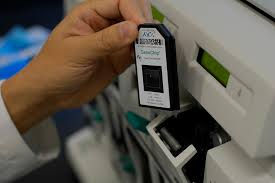

The late 1980s were heady days for molecular biologists. PCR was only a few years old.
The automated DNA sequencer had just been invented.The Human Genome Project was being
debated in Congress. Against such a backdrop, two events on either side of the Atlantic
Ocean hardly registered at all.At Oxford University Edwin Southern, of Southern blot fame
developed a way to use inkjet printing – using four bases rather than four colors – to build
oligonucleotide sequences on glass slides like Legos on a solid surface, one atop another.
At the same time a young biochemist named Stephen Fodor at a little-known Palo Alto, Calif.
-based company called Affymax, began tinkering with using photolithography – a technique used
to etch the tiny features of semiconductor chips – to do the same thing.Aware that they had
something powerful by the tail, Southern and Fodor toiled in their respective laboratories,
relatively unnoticed by investors and the scientific community at large. But the techniques
they were perfecting would ultimately yield a technology that revolutionized functional genomics,
and came to symbolize the vast pools of data it could yield: the DNA microarray.Those benefits
wouldn't come easily, however. "There was a long period when everyone was working hard to get
the technology to work well," says Southern. "We recognized the potential, but there had to be
a lot of basic chemical and biological work."

{kind=link}